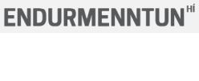

Gagnasöfn og SQL
Mars 2026
Þessi vefsíða inniheldur ýmislegt aukaefni í tengslum við námskeiðið Gagnasöfn og SQL hjá
Endurmenntun Háskóla Íslands í mars/apríl 2026.
Kennari er Hjálmtýr Hafsteinsson dósent í tölvunarfræði við Háskóla Íslands.
Kennsla í námskeiðinu er í tveimur hlutum:
- Miðvikudag 25. mars kl. 13:00 - 16:00 (lausnir á æfingum)
- Miðvikudag 8. apríl kl. 13:00 - 16:00
Glærur:
Heimaæfingar:
Uppsetning:
- Notað verður gagnasafnskerfið SQLite. Það er hægt að nota það á tvo vegu:
- Skipanalínuviðmót: Það fylgir með á MacOS og Linux, en við þurfum að ná í það á Windows
- Windows: Náið í skránna sqlite3.exe (hægri-smella og "Save link as...") og vistið hana í nýrri möppu á tölvunni.
- MacOS: Opna "Terminal" glugga (sjá myndband) og gefa skipunina sqlite3
- Linux: Opna "Terminal" glugga og gefa skipunina sqlite3
- Viðmót í vafra: Opna vefsíðuna SQLiteOnline
- Náið svo í sýnisgagnasafnið sumarhus.db (hægri-smella og "Save link as...") og vistið það á tölvunni ykkar (í sömu möppu og sqlite3.exe í Windows).
- Opna gagnasafn:
- Skipanalínuviðmót: Keyra skránna sqlite3 (þ.e. sqlite3.exe í Windows) og gefa skipunina ".open sumarhus.db" (munið eftir punktinum fremst og ekki slá inn gæsalappirnar!).
- Vafraviðmót: Opna sqliteonline.com og smella á disk-táknið efst til vinstri á síðunni. Velja svo "Open SQLite DB" til að hlaða inn skránni sumarhus.db.
Sýnisgagnasafn
- Sýnisgagnasafnið sem við notum er í skránni sumarhus.db og hér eru gögnin í henni. Það inniheldur
ýmsar upplýsingar um útleigu á sumarhúsum.
- Hér er skipanaskrá sem býr til töflurnar og sýnisgögnin: sumarhus.sql (þið ættuð ekki að þurfa þessa skrá)
- Hér er listi yfir skipanir sem hægt er að nota í skipanalínuviðmótinu (fæst með skipuninni .help). Þær
skipanir sem við notum mest eru feitletraðar.
SQLite heimildir
Önnur notendavæn viðmót á SQLite:
Annað SQL kennsluefni
Háskólanámskeið um Gagnasafnsfræði
hh@hi.is, mars 2026.
{kind=link}